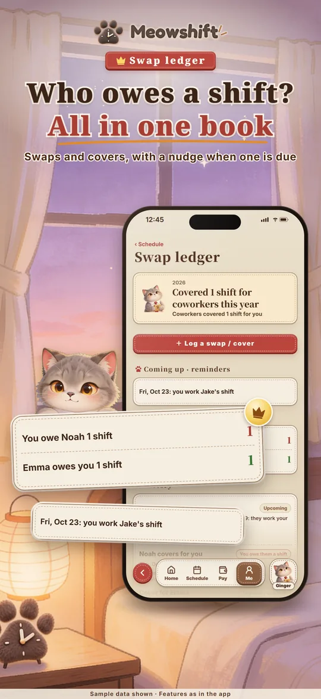

🎁 Tutto PRO i primi 7 giorni


Meowshift è fatto per chi lavora a turni: infermieri, OSS, operai, commessi, vigilanza, ospitalità e lavoratori part-time. Inserisci i turni e vedi in che giorni lavori, a che ora stacchi e quanto guadagnerai più o meno questo mese.





🎁 Tutto PRO i primi 7 giorni: tutte le funzioni PRO sono gratis per 7 giorni dal download, senza pagamento e senza addebiti automatici. Poi continui a usare gratis le funzioni di base o ti abboni a Meowshift PRO.

I prezzi variano in base al paese; vale quello mostrato su App Store o Google Play. L’abbonamento si rinnova automaticamente e puoi disdirlo in qualsiasi momento dallo store.
Le stime sono solo indicative: fa fede il cedolino del tuo datore di lavoro.
Turni, straordinari, stipendio